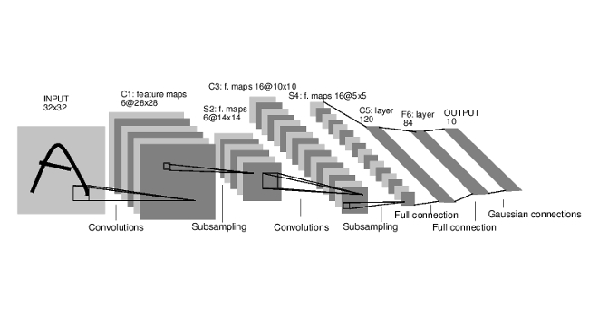
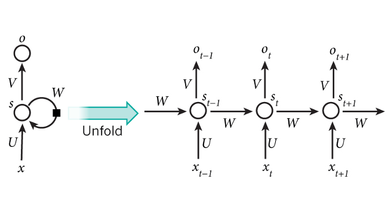
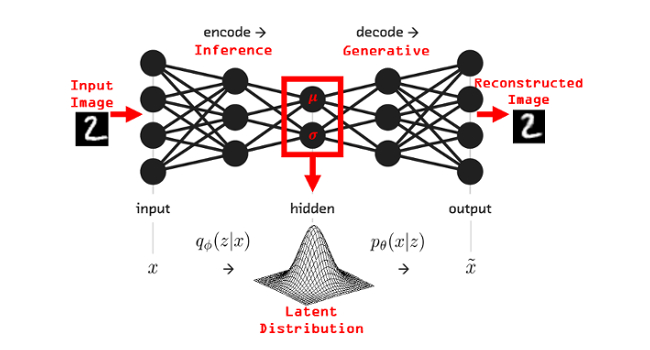

October 27, 2020 | 13.00-15.00 | Online lecture
This lecture introduces the structure of the Deep Learning course, and gives a short overview of the history and motivation of Deep Learning.
October 27, 2020 | 17.00-19.00 | On-campus TA session
The first practical session will be used to help you setting up the provided conda environment in the assignment github repository. We will not have a notebook tutorial session in the first 30 minutes yet but start from the second tutorial on.
October 29, 2020 | 11.00-13.00 | Online lecture
This lecture series discusses modular learning in deep neural networks and covers linear and nonlinear modules, gradient-based learning and the backpropagation algorithm.
October 29, 2020 | 13.00-15.00 | Online tutorial + Online TA session
We will discuss the PyTorch machine learning framework, and introduce you to the basic concepts of Tensors, computation graphs and GPU computation. We will continue with a small hands-on tutorial of building your own, first neural network in PyTorch. If you are already familiar with PyTorch, you might just want to skim the notebook.
We also provide a short tutorial for working with the Lisa cluster, and how to setup your account for Lisa. This guide complements the Lisa presentation during the lecture. There will be no presentation about the Lisa notebook as it is only a short guide.
After the presentation, there will by an online TA session for Q&A for assignment 1, lecture content and more.
November 3, 2020 | 13.00-15.00 | Online lecture
This lecture series discusses advanced optimizers, initialization, normalization and hyperparameter tuning.
November 3, 2020 | 17.00-19.00 | Online tutorial + On-campus TA session
In this tutorial, we will discuss the role of activation functions in a neural network, and take a closer look at the optimization issues a poorly designed activation function can have.
After the presentation, there will by an on-campus TA session for Q&A for assignment 1, lecture content and more.
Online lecture
This lecture series covers convolutional neural networks for image processing.
November 5, 2020 | 13.00-15.00 | Online tutorial + Online TA session
In this tutorial, we will discuss the importance of proper parameter initialization in deep neural networks, and how we can find a suitable one for our network. In addition, we will review the optimizers SGD and Adam, and compare them on complex loss surfaces.
After the presentation, there will by an online TA session for Q&A for assignment 1, lecture content and more.
Online lecture
This lecture series covers modern ConvNet architecture.
November 10, 2020 | 13.00-15.00 | Online tutorial + On-campus TA session
In this tutorial, we will implement three popular, modern ConvNet architectures: GoogleNet, ResNet, and DenseNet. We will compare them on the CIFAR10 dataset, and discuss the advantages that made them popular and successful across many tasks.
After the presentation, there will by an on-campus TA session for Q&A for assignment 1, lecture content and more.
Online lecture
This lecture series covers Recurrent Neural Networks.
November 12, 2020 | 12.00-13.00 | Online tutorial + Online TA session
In this tutorial, we will discuss the relatively new breakthrough architecture: Transformers. We will start from the basics of attention and multi-head attention, and build our own Transformer. We will perform experiments on sequence-to-sequence tasks and set anomaly detection.
After the presentation, there will by an online TA session for Q&A for assignment 1, lecture content and more.
Online lecture
This lecture series covers Graph Neural Networks.
November 19, 2020 | 12.00-13.00 | Online tutorial + Online TA session
In this tutorial, we will discuss the implementation of Graph Neural Networks. In the first part of the tutorial, we will implement the GCN and GAT layer ourselves. In the second part, we use PyTorch Geometric to look at node-level, edge-level and graph-level tasks.
After the presentation, there will by an online TA session for Q&A for assignment 1, lecture content and more.
Online lecture
This lecture series introduces Deep Generative Models.
November 24, 2020 | 14.00-15.00 | Online tutorial + On-campus TA session
In this tutorial, we will discuss energy-based models for the application of generative modeling. In the first part of the tutorial, we will shortly review the theory on energy-based models and how we can use them for generative modeling. The second part shows the application of an energy-based model on image generation, and we implement a CNN on MNIST digit generation.
After the presentation, there will by an on-campus TA session for Q&A for assignment 2, lecture content and more.
Online lecture
This lecture series introduces the framework of variational inference and Variational Autoencoders (VAEs).
November 26, 2020 | 12.00-13.00 | Online tutorial + Online TA session
In this tutorial, we will discuss deep convolutional autoencoders and their applications. In the practical and lecture, you will see variational autoencoders (VAE), which add a stochastic part to vanilla autoencoders. Both have their advantages and applications, of which we visit image retrieval and compression for the vanilla auotoencoder.
After the presentation, there will by an online TA session for Q&A for assignment 2, lecture content and more.
Online lecture
This lecture series discusses Generative Adversarial Networks.
December 01, 2020 | 14.00-15.00 | Online tutorial
In this tutorial, we will discuss adversarial attacks on deep neural networks, specifically CNNs. We will discuss the possible threads of such attacks, and implement two white-box attacks ourselves: FGSM and Adversarial Patches. Afterwards, we test the transferability of such attacks, and discuss how you could protect a network against adversarial attacks.
Online lecture
This lecture series discusses autoregressive image modeling and normalizing flows.
December 08, 2020 | 14.00-15.00 | Online tutorial
In this tutorial, we will discuss the application of Normalizing Flows to the task of image modeling. We review the ideas of (variational) dequantization, and show the potential of multi-scale flow architectures.
Online lecture
Details will follow soon.
December 10, 2020 | 12.00-13.00 | Online tutorial
In this tutorial, we will discuss the application of autoregressive models to the task of image modeling. Specifically, we implement our own, small PixelCNN model, and review the design of masked autoregressive convolutions.
After the presentation, there will by an online TA session for Q&A for assignment 3, lecture content and more.
|
Deadline: November 15, 2020 In this assignment, you will learn how to implement and train basic neural architectures like MLPs and CNNs for classification tasks. Therefore, you will make use of modern deep learning libraries such as PyTorch which come with sophisticated functionalities like abstracted layer classes, automatic differentiation, optimizers, and more. Documents: |

|
|
Deadline: December 1, 2020 In this assignment you will study and implement recurrent neural networks (RNNs) and have a theoretical introduction to graph neural networks (GNNs). RNNs are best suited for sequential processing of data, such as a sequence of characters, words or video frames. Their applications are mostly in neural machine translation, speech analysis and video understanding. GNNs are specifically applied to graph-structured data, like knowledge graphs, molecules or citation networks. Documents: |

|
|
Deadline: December 20, 2020 Modelling distributions in high dimensional spaces is difficult. Simple distributions such as multivariate Gaussians or mixture models are not powerful enough to model complicated high-dimensional distributions. The question is: How can we design complicated distributions over high-dimensional data, such as images or audio? In this assignment, you will focus on three examples of well-known generative models: Variational Autoencoders (VAEs), Generative Adversarial Networks (GANs), and Normalizing Flows (NFs). Documents: |

|
If you have any questions or recommendations for the website or the course, you can always drop us a line! The knowledge should be free, so feel also free to use any of the material provided here (but please be so kind to cite us). In case you are a course instuctor and you want the solutions, please send us an email.